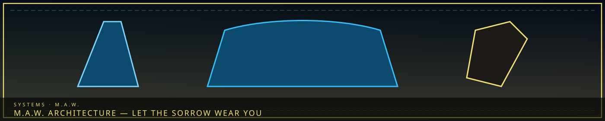

/// RAPID JUMP:
STATUS: ARCHIVE VERIFIED |
CLEARANCE: LEVEL-4 OVERSIGHT |
PROTOCOL: REVERIE DIRECTORATE
ARTICLE
DISCUSSION
SOURCE
HISTORY
YEAR 4,238 · DAWN OF HOPE
SYSTEMS & MECHANICS RECORD
M.A.W. Equipment Architecture & Synthesis
Contents
“To wear the M.A.W. is to let the sorrow wear you. You do not equip it — you agree.”

 From AppearanceNot from the nickname
From AppearanceNot from the nicknameM.A.W. — Materialized Agony Wear
M.A.W. — Materialized Agony Wear (실체화된 고통의 갑옷)
Full Name: Materialized Agony Wear
Abbreviation: M.A.W.
Etymology: Maw — a hungry, devouring throat. Directly references The Maw (구라/Gula), the site of the Cheongula where the First Sorrow occurred.
"To wear the M.A.W. is to let the sorrow wear you. You do not equip it — you become it, for a time."
What is M.A.W.?
M.A.W. is equipment manifested from Sorrow Entities — weapons, armor, tools, and accessories that embody the specific grief of their source entity.
When a Sorrow Entity is studied, understood, and resonated with, its sorrow can be externalized into physical form. This form becomes M.A.W. — wearable, usable, but always carrying the weight of its origin.
M.A.W. is not manufactured. It is extracted — pulled from the entity's emotional core through a process of resonance and containment. The entity must be alive and coherent for extraction to work.
The name's significance:
- M.A.W. is named after The Maw — the site of the Cheongula
- Just as The Maw consumed 1,000 citizens, M.A.W. "consumes" the wearer — temporarily
- The name is a warning: this equipment is alive with sorrow. Treat it with respect.
How M.A.W. is Obtained
Step 1: Containment
- A Sorrow Entity must be contained in a stable environment
- Containment is managed by specialized facilities (see: Sector Designation, below)
- The entity must be alive — dead or dispersed entities cannot yield M.A.W.
Step 2: Study
- The entity's origin, behavior, and emotional core must be understood
- This requires resonance — the researcher must feel the entity's sorrow without being consumed by it
- Study is dangerous — too much resonance causes Fracture
Step 3: Extraction
- Through resonance, the entity's sorrow is externalized into physical form
- The form is shaped by the entity's nature — a grief-entity might yield a shield; a rage-entity might yield a blade
- Extraction is painful for both entity and extractor
- Each extraction weakens the entity temporarily
Step 4: Bonding
- M.A.W. must be bonded to a user — it does not work for just anyone
- The user must resonate with the entity's specific sorrow
- Bonding is permanent — the M.A.W. remembers its user
- If the user's sorrow changes, the M.A.W. may reject them — or adapt
M.A.W. Types
| Type | Form | Example | Source Entity Type |
|---|---|---|---|
| Weapon (Weapon) | Blades, hammers, ranged implements | Lament's Edge — a sword that weeps | Grief-entities |
| Armor (Wear) | Suits, shields, protective gear | The Mourning Shell — armor that absorbs sorrow | Endurance-entities |
| Tool (Implement) | Devices, instruments, utilities | The Debt Scale — measures karmic weight | Balance-entities |
| Accessory (Trinket) | Rings, masks, amulets | The Forgotten Mask — hides identity | Identity-entities |
| Hybrid (Composite) | Combinations of the above | The Weeping Hammer — weapon that heals allies | Complex-entities |
M.A.W. Grades
M.A.W. grades correspond to the potency of their source entity:
| Grade | Source | Power | Risk | Name Convention |
|---|---|---|---|---|
| α (Alpha) | Minor entities | Basic enhancement | Low | Named after the entity |
| β (Beta) | Moderate entities | Significant enhancement | Medium | Named after the entity + descriptor |
| γ (Gamma) | Major entities | Powerful abilities | High | Named after the entity's origin story |
| δ (Delta) | Critical entities | Reality-bending | Extreme | Named after the entity's emotional core |
| ω (Omega) | Catastrophic entities | Unknown | Unknown | Forbidden — The Director's fusion is the only ω-grade |
Note: An ω-grade M.A.W. has never been successfully extracted. The only ω-grade entity is The Maw itself — and attempting extraction would mean... wearing the Cheongula.
The Cost of Using M.A.W.
M.A.W. is not free. It is alive with sorrow, and it demands a price.
| Cost | Effect | Duration |
|---|---|---|
| Emotional drain | The wearer feels the entity's sorrow — grief, rage, loss | During use |
| Memory bleed | The entity's memories may surface in the wearer's mind | Temporary, but cumulative |
| Physical toll | The body bears the weight of sorrow — fatigue, pain, aging | During and after use |
| Resonance shift | The wearer's emotional state is altered — they become more like the entity | Gradual, potentially permanent |
| Fracture risk | Prolonged use without breaks can cause the wearer to Fracture | Cumulative — high risk with powerful M.A.W. |
The rule: M.A.W. must be used in shifts. No one wears it continuously. The sorrow is too heavy. The entity is too present.
M.A.W. and the Architects
The Architects are the primary users of M.A.W. — their work requires them to handle raw Han, and M.A.W. provides protection and tools.
Architect M.A.W. protocol:
- Each Architect is assigned M.A.W. based on their resonance compatibility
- M.A.W. is checked out from the facility, used for a shift, then returned
- Personal M.A.W. is rare — reserved for Shapers and above
- The Architect's Mark may be accelerated by M.A.W. use — but this is debated
M.A.W. Gifts & Corrosion
M.A.W. Gifts (선물 — Seonmul) — Passive Items
What they are: Small M.A.W. items — rings, masks, amulets, bracelets, hairpins — that provide passive effects without requiring active use. Unlike M.A.W. weapons and armor, Gifts are always active — worn constantly, shaping the wearer's experience.
"A Gift is not a tool. It is a companion. It whispers. It watches. It remembers."
How they form:
- Gifts are byproducts of M.A.W. extraction — small fragments of the entity's sorrow that crystallize during the process
- They are not extracted intentionally — they simply appear
- Each Gift is unique — shaped by the entity's specific sorrow
- Gifts are bonded to the wearer — they cannot be removed without assistance
Types of Gifts:
| Type | Slot | Example | Passive Effect |
|---|---|---|---|
| Ring | Hand | The Mourning Band | Increases sorrow tolerance — Han affects you less |
| Mask | Face | The Forgotten Mask | Conceals identity — entities cannot see your face |
| Amulet | Neck | The Cold Heart | Dampens emotional responses — you feel less |
| Bracelet | Wrist | The Debt Chain | Reveals the debts of others — you see their burden |
| Hairpin | Head | The Ember Pin | Provides warmth — protects against cold sorrow |
| Earring | Ear | The Whisper Stud | Hears entity communication — you understand their language |
Gift Mechanics:
- Gifts are always active — no activation required
- Gifts have no direct cost — but they shape the wearer over time
- Gifts can be upgraded by feeding them Echoes — increasing their effect
- Gifts can be removed — but the process is painful (the Gift resists)
Notable Gifts:
| Gift | Source Entity | Type | Effect | Cost |
|---|---|---|---|---|
| The Mourning Band | The Grieving Colossus | Ring | +20% sorrow tolerance | Wearer weeps at night |
| The Forgotten Mask | The Memory Weaver | Mask | Invisible to memory attacks | Wearer slowly loses small memories |
| The Cold Heart | The Frozen Veil | Amulet | Immune to emotional manipulation | Wearer cannot feel joy |
| The Debt Chain | The Inherited Debt | Bracelet | See others' karmic debt | Wearer feels every debt they see |
| The Ember Pin | The Ember Child | Hairpin | Protection from cold sorrow | Happy memories fade slightly |
| The Whisper Stud | The Hollow Choir | Earring | Understand entity language | Hears whispers constantly |
| The Duty Ring | The Forgotten Soldier | Ring | +15% combat effectiveness | Wearer cannot flee from duty |
| The Tear Pendant | The Orphaned Bell | Amulet | Resistance to memory loss | Hears the bell faintly |
M.A.W. Corrosion (부식 — Busik) — When M.A.W. Fails
What it is: When M.A.W. is overused, misused, or neglected, it corrodes — the entity's personality begins to overtake the wearer. The M.A.W. does not just fail — it turns.
"The M.A.W. is alive. Push it too far, and it will push back."
How Corrosion happens:
- Overuse: Using M.A.W. beyond recommended shifts — the entity's sorrow accumulates in the wearer
- Misuse: Using M.A.W. against its nature — a Lament weapon used for joy, a Grudge armor used for cowardice
- Neglect: Not feeding the M.A.W. Echoes — the entity becomes hungry, desperate
- Emotional conflict: The wearer's sorrow contradicts the entity's — creating internal friction
The Corrosion Process:
| Stage | Name | Signs | Duration |
|---|---|---|---|
| 1 | Whispers | The wearer hears the entity's voice — faint, insistent | Days |
| 2 | Bleed | The wearer's personality shifts — becoming more like the entity | Weeks |
| 3 | Merge | The wearer and entity's personalities blend — boundaries blur | Months |
| 4 | Takeover | The entity's personality dominates — the wearer is inside their own body | Permanent |
Stage 1 — Whispers:
- The wearer hears the entity's voice — not words, but feelings
- The entity expresses preferences — what it likes, what it dislikes, what it wants
- The wearer can ignore the whispers — but they never fully stop
Stage 2 — Bleed:
- The wearer's personality shifts — they become more like the entity
- A Lament-weapon wearer becomes more melancholic
- A Grudge-armor wearer becomes more aggressive
- A Void-tool wearer becomes more detached
- A Weight-accessory wearer becomes more resigned
Stage 3 — Merge:
- The boundaries between wearer and entity blur
- The wearer speaks with the entity's voice — saying things they didn't intend
- The wearer acts on the entity's impulses — without realizing it
- The wearer's memories mix with the entity's memories — confusion
Stage 4 — Takeover:
- The entity's personality dominates
- The wearer is still aware — but trapped inside their own body
- The entity uses the body for its own purposes — seeking what it lost, what it wants, what it needs
- This is not Fracture — the wearer's body does not transform. They are still human. But the mind is no longer theirs.
How to prevent Corrosion:
- Follow shift limits — do not use M.A.W. beyond recommended time
- Feed the M.A.W. Echoes regularly — keep the entity satisfied
- Monitor personality changes — if you notice shifts, report to R.D.
- Take breaks — let the M.A.W. rest, let yourself rest
- Talk to someone — the Secretary, a fellow worker, anyone
How to treat Corrosion:
- Stage 1: Rest and reflection — the whispers fade with distance
- Stage 2: M.A.W. removal — painful, but necessary
- Stage 3: Core Suppression-level intervention — forces the entity back
- Stage 4: No known treatment — the wearer is lost
M.A.W. Corrosion — The Echo-Core Risk
Echo-Cores use M.A.W. more than anyone — and they are at the highest risk of Corrosion.
| Echo-Core | M.A.W. Status | Corrosion Risk |
|---|---|---|
| The Director | ω-grade, permanently fused | Stage 4 — the entity IS part of them |
| The Secretary | No M.A.W. — AI construct | None |
| The Containment Lead | Partial Maw-merge | Stage 3 — merging with The Maw |
| The Extraction Lead | Android body — M.A.W. compatible | Stage 2 — personality shifts noted |
| The Research Lead | Hollow — no entity resonance | None — cannot corrode |
| The Border Lead | Entity inside — Effloresced | N/A — Efflorescence, not Corrosion |
| The Archive Lead | Cryogen — isolated | None — no M.A.W. contact |
| The Outsider | Android — M.A.W. compatible | Stage 1 — whispers noted |
| The Exile | Desolate-changed | Unknown — the Desolate is changing them |
Full details: The_REVERIE_DIRECTORATE.md
M.A.W. Mechanics
M.A.W. Mechanics
Equipping: Bonded to specific user. Feels like a second skin. Entity's presence becomes part of you.
Using M.A.W.:
| Action | Effect | Cost |
|---|---|---|
| Basic attack | Enhanced damage, entity effects | Emotional drain (minor) |
| Special ability | Unique power per entity type | Emotional drain + memory bleed |
| Resonance burst | Full entity power release | Severe toll + Fracture risk |
| Entity communion | Communicate with source entity | Memory bleed + identity shift |
Maintenance: Requires Echoes. Without them, M.A.W. weakens and may rebel.
Rejection: If user's sorrow changes, M.A.W. may reject — emotional backlash, physical pain.
CANONICAL RECORD: Sourced directly from the official Project Somnarak Worldbuilding Codex.
CANONICAL CROSS-LINKS & ATLAS CONNECTIONS
Echo-Core Signature Equipment
The central equipment registry records the following stat blocks. These classifications do not convert unrelated body systems, departmental tools, or manifestations into M.A.W.
Majin — Reaper Hungered
| Field | Registry Entry |
|---|---|
| Type | Weapon — fused signature M.A.W. |
| Grade | Ω — Singular |
| Bearer | Majin only |
| Element | Grudge (Crimson) + Lament (Deep Blue) |
| Bearer signature | Weight — Black |
| Damage | 10–20 Grudge direct |
| Secondary damage | 3 Lament per second for 10 seconds |
| Tick interval | 0.5 seconds |
| Damage per Tick | 1.5 Lament |
| Full aftertone | 30 Lament across 20 Ticks before falloff |
| Speed | 3 — Fast |
| Range | 3 — Medium |
| Attack pattern | Pierce |
| Coverage | Scythe-line through up to 3 targets |
| Falloff | 100% → 70% → 50%, applied separately to the direct hit and every Tick |
| Maximum amount | 1 — Unique |
| Operational cost | Null — fusion internalizes the operational exchange |
| Binding cost | Irreversible fusion, deathlessness, pain retention, and permanent containment responsibility |
| Target | Grudge Direct | Lament / second | Lament / 0.5-second Tick | Full 10-second Lament |
|---|---|---|---|---|
| Primary — 100% | 10–20 | 3 | 1.5 | 30 |
| First pierced — 70% | 7–14 | 2.1 | 1.05 | 21 |
| Second pierced — 50% | 5–10 | 1.5 | 0.75 | 15 |
Phantom Reptile Beast
| Field | Registry Entry |
|---|---|
| Attack | Single-target phantom bite |
| Damage | 999 Weight (Black) |
| Secondary effect | Room-sized Slowness aura |
| Aura duration | 5 seconds |
| Activation cost | 90% of Majin's HP + 90% of Majin's SP |
| Cooldown | Not specified |
The cost basis—current or maximum HP/SP—and the aura's exact slowing strength remain unspecified.
Mellda — Threshold Vow
| Field | Registry Entry |
|---|---|
| Type | Integrated Cyborg weapon |
| Output rating | Critical (δ)-equivalent; not an actual M.A.W. grade |
| Element | Weight (Black) + Grudge (Crimson) |
| Damage | 6–16 Weight direct + 2 Grudge per second for 10 seconds |
| Speed | 1 — Slow |
| Range | 5 — Room |
| Attack pattern | Pierce |
| Coverage | One line; up to 3 targets |
| Falloff | 100% → 70% → 50%, applied separately to direct damage and each Tick |
| Maximum amount | 1 — integrated into the designated left arm |
| M.A.W. status | Manufactured Cyborg equipment; not extracted, bonded, or self-manifested M.A.W. |
| Target | Direct Weight | Grudge Tick |
|---|---|---|
| Primary — 100% | 6–16 | 2 per second for 10 seconds |
| First pierced — 70% | 4.2–11.2 | 1.4 per second for 10 seconds |
| Second pierced — 50% | 3–8 | 1 per second for 10 seconds |
Singular Weight Wave
| Field | Registry Entry |
|---|---|
| Damage | 25 Weight (Black) |
| Pattern | Single line; up to 3 targets |
| Falloff | 25 → 17.5 → 12.5 under the normal 100% → 70% → 50% line rule |
| Recharge | 15 seconds |
Threshold Vow is manufactured equipment. Its output comparison does not make it Mellda's personal M.A.W. or define the possible M.A.W. of her Effloresced passenger.
Ishall — Unanswered
Converging Refusal
| Field | Registry Entry |
|---|---|
| Type | Artifact Hands — paired remote weapon |
| Grade / tier | δ — Critical |
| Element | Grudge (Crimson) + Void (Pale White) |
| Damage | 10–15 Grudge direct + 1.5 Void per second for 6 seconds |
| Tick interval | 1 second — 6 Ticks, 9 total Void before falloff |
| Speed | 3 — Fast |
| Range | 4 — Long |
| Pattern | AoE |
| Falloff | 100% → 70% → 50%, applied separately to direct damage and each Tick |
| Maximum amount | 1 — Unique pair |
| Operational cost | 18 Sorrow Echoes per complete paired assault |
| Binding cost | Continuous two-point sensory link; feedback and phantom pressure transfer to Ishall's sensorium |
| Recovery | 8 seconds after the complete paired assault |
| M.A.W. status | Before-Time Artifact equipment; not M.A.W., body hands, specialized arms, or Cyborg anatomy |
| Zone | Direct Grudge | Void / Tick | Tick Count | Total Void |
|---|---|---|---|---|
| Center — 100% | 10–15 | 1.5 | 6 | 9 |
| Inner — 70% | 7–10.5 | 1.05 | 6 | 6.3 |
| Outer — 50% | 5–7.5 | 0.75 | 6 | 4.5 |
Closed Ground
| Field | Registry Entry |
|---|---|
| Mode | Area-denial field |
| Element | Void — Pale White |
| Damage | 2 Void per second for 10 seconds in the center zone |
| Tick interval | 1 second — 10 Ticks |
| Speed | 2 — Normal to establish |
| Range | 5 — Room |
| Pattern | AoE |
| Falloff | 100% → 70% → 50% by center, inner, and outer zones |
| Duration | 10 seconds maximum |
| Operational cost | 45 Sorrow Echoes |
| Recovery | 30 seconds after the field ends |
| Concurrency | One field; both artifacts occupied; no Converging Refusal during the effect |
| Collapse conditions | Broken concentration, either artifact leaving Range 5, synchronization failure, or disruptive artifact damage |
| Zone | Void / Tick | Tick Count | Full Total |
|---|---|---|---|
| Center — 100% | 2 | 10 | 20 |
| Inner — 70% | 1.4 | 10 | 14 |
| Outer — 50% | 1 | 10 | 10 |
Closed Ground disrupts Han-assisted movement and remote Han-wave transmission. It does not stop ordinary movement, speech, mundane weapons, or every higher-output system. Friendly Han systems are also affected.